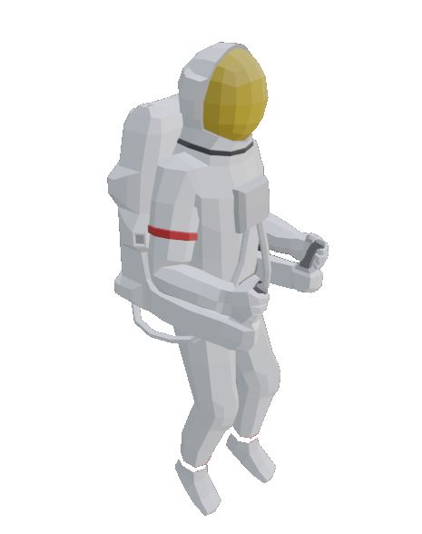
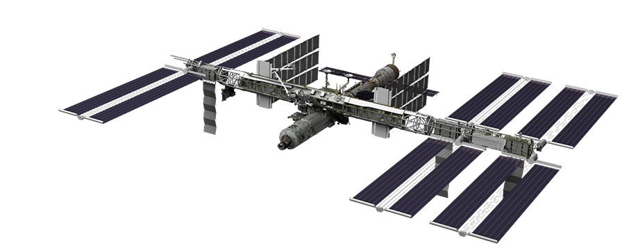

Project Pyxis or Project Compass (Hope thoughts alone on the space station)
On TV, on the radio, on social media everyone says the earth is collapsing, that if project Pyxis fail, the human race will be extinct.
We didn't succeed in colonizing Mars and Titan, those planets and moon didn't have the necessary atmosphere and a space travel plan was faster than turning Mars into a habitable planet. Countries from all over the world came together and created the Pyxis Project, in honor of the constellation, some say the name was given to show the way for the human race to survive but it was actually a bad joke with the astronauts since they didn't have no compass to follow, basically whoever got anywhere was the winner and the others who found nothing were aware of the suicide mission, but everyone there hoped to find a place and name it after, others were assigned to stations support, which is my job, if you basically give shit on the trip and the astronaut gets back I'm your safety bridge, I'm as far from the ground as they were, there were several support stations but not many left, some were defective and his crew managed to escape, mine was no different, things sent into space should have been better done but the worldwide propaganda was overwhelming and if the ship was able to get out of t making mistakes without exploding was enough for them, now I'm alone at the space station, my team managed to escape after a central system crash, and like in the movies someone had to stay to ensure that most would survive, and once again the joke bad taste reigns in the universe, the person who fought bravely to save his companions is called Hope, it could be any fictional story but my mother really baptized me with that name, it could be worse, it could be Love but luckily it was Hope. For months he was repairing the space station to keep me alive, I keep sending a distress signal and believing that that little ship will one day reach Earth and send help to a single person adrift in space, if I just accept that I will die here and not fixing anything anymore, death will be painful, if I keep fixing the ship, death can be painful in the same way, except that time will pass faster. I am hoping that someone from anywhere, from the earth or from another galaxy will come and save me, I have lost count of how many months I have been here, I don’t know if it’s been years but I know my hair has been cut three times, loneliness would drive anyone crazy but luckily the space station fails every time so i have to worry about.
